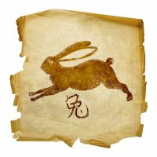
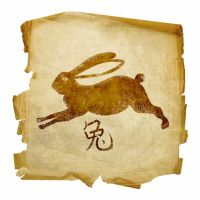

Ești: Pagină principală/ Zodiac Chinezesc / Compatibilitate Zodii Chinezești
Selectați zodia partenerului:

 



Compatibilitate Bivol - Bivol
O pereche formată din doi nativi din zodia Bivol, va fi o echipa formată din două persoane cu o voință de fier. Există premise pentru o relație reușită, în cazul în care partenerii își trasează niște limite pe care să le respecte. De asemenea, ambii trebuie să învețe să-și exploateze sentimentele, pasiunea în folosul relației dintre ei, și să își organizeze timpul astfel încât să aibă cât mai multe momente de intimitate și romantism, în afară timpului dedicat muncii, sarcinilor domestice. Atât femeia Bivol, cât și bărbatul născut în această zodie, sunt persoane foarte stabile, persoane pe care întotdeauna te poți baza, indiferent dacă este o relație de colegialitate la muncă, o relație de prietenie sau o relație de cuplu. Inclusiv din punct de vedere sentimental, nativii Bivol sunt foarte stabili, nu experimentează nici un fel de turbulențe emoționale. Sunt buni ascultători, se poate vorbi cu ei destul de deschis, știind că nu vor dezvălui ceea ce li se spune. Atunci când își asumă un angajament, întotdeauna este dus la bun sfârșit, indiferent cât de mult timp ar dura sau ce eforturi ar fi implicate. Totuși, nu se implică foarte ușor, se gândește mult până să se implice, tocmai din cauza faptului că nu-i place să dezamăgească. Din această cauza, o relație între doi nativi din Bivol poate trena mult până la faza de implicare totală, până la concretizarea să, dar, în momentul în care ambii și-au asumat relația, lucrurile vor merge că pe roate. Bivolii se implică într-o relație sentimentală cu toată ființă lor, întotdeauna vor da foarte mult, însă vor și cere foarte mult. Din acest punct de vedere, alăturarea dintre doi nativi ai acestei zodii nu ar pune prea multe probleme, având în vedere că au trăsături de caracter asemănătoare și că își înțeleg reciproc nevoile și prioritățile. Relația dintre Bivoli nu va fi niciodată sub formă unei iubiri vulcanice, o pasiune înflăcărată. Mai degrabă este un foc ce arde constant, cu aceeași intensitate, fiind menținut astfel de ambii parteneri de relație. Pericole există, binențeles, și în această relație. În primul rând, există un risc foarte mare că relația să ajungă în impas din cauza rutinei. Bivolilor le place să-și organizeze timpul, le place să facă tot ceea ce și-au propus, de aceea se vor gândi dinainte cum să acționeze. Totuși, în acest fel, se ajunge la o monotonie care poate eroda relația de cuplu. Fiecare partener se va trezi prins în propria să rutină, fără că lucrurile în comun să mai fie luate în considerare așa cum trebuie. Așa că, din când în când, este nevoie de o ieșire din cotidian, de ceva ce se poate face spontan, împreună, ceva care să ofere culoare relației. Comunicarea este, pe de altă parte, esențială. Trebuie că partenerii să-și dezvăluie, reciproc, sentimentele, trăirile interioare, dragostea unuia față de celălalt. Nu este suficient că partenerii știu că pot conta unul pe celălalt, mai au nevoie s-o și audă, mai au nevoie și de tandrețe, de exprimarea verbală a ceea ce simt. Odată ce se stabilesc canalele de comunicare eficiente, este foarte posibil că relația Bivol – Bivol, să evolueze extrem de bine, astfel încât să stârnească invidii printre cei din jur. O astfel de stabilitate în relația de cuplu este greu de atins și, odată ce există siguranță în relație, celelalte lucruri se rezolva de la sine.